Solo Boating Safety
A Practical Guide from Kayaks to Cruisers
Practical preparation, communications, self-recovery, weather awareness, float planning, and pre-departure checklists for recreational boaters who go out alone.
Copyright and edition
Copyright © 2026 FloatPlanWizard. All rights reserved.
Written by Larry W., Founder of FloatPlanWizard.
First Edition - 2026
FloatPlanWizard is a product and publication name used by FloatPlanWizard. No registered trademark claim is made in this edition.
Safety information and referenced regulations can change. Readers should verify current requirements with the appropriate authorities.
Safety disclaimer
This book provides educational information for recreational boaters. It is not a substitute for seamanship training, hands-on instruction, manufacturer guidance, or sound judgment on the water.
It does not replace current guidance from the U.S. Coast Guard, NOAA, the National Weather Service, state or local authorities, equipment manufacturers, or other appropriate authorities. Laws and equipment requirements vary by vessel, activity, size, operating waters, location, and jurisdiction. Conditions and individual capability also vary.
The operator remains responsible for vessel operation, equipment selection, preparation, and every go, modify, postpone, or return decision. In an emergency, use the appropriate emergency services and official procedures for the location and circumstances.
FloatPlanWizard does not continuously watch every trip, verify distress, guarantee message delivery, guarantee a vessel's current location, contact emergency authorities automatically, or dispatch assistance.
About this guide
Solo boating can be one of the most rewarding ways to spend time on the water. It also removes the safety margin that another capable person aboard may provide.
This guide was developed around the additional considerations that arise when recreational boaters operate alone. It applies across a broad range of craft, including kayaks, canoes, stand-up paddleboards, skiffs, fishing boats, center consoles, powerboats, sailboats, and cruising boats. The preparation appropriate to each craft is not identical, but the central question is the same: what changes when nobody else is aboard to help?
The book explains why the precautions matter before presenting the complete pre-departure checklist. It is intentionally practical and non-alarmist. Solo boating is not treated as inherently reckless. Preparation, conservative judgment, self-recovery capability, redundant communication, and a useful float plan simply become more important.
A note from the founder
FloatPlanWizard began with a simple personal need. I frequently boat alone, and I wanted an easier way to leave my family a useful float plan before I departed and let them know when I was safely back.
That experience shaped this guide. It is written for recreational boaters who value the freedom of going out alone and also understand the responsibility that comes with it.
Larry W.
Founder, FloatPlanWizard
Chapter 1 - Why Solo Boating Changes the Safety Equation
A quiet paddle, a day of fishing, a solo sail, or a cruise with nobody else's schedule to manage can be exactly what many boaters are looking for. The experience can be peaceful, focused, and deeply rewarding.
It also changes the safety equation. When you are alone, there is no second person aboard to take the helm if you become ill or injured, call for help if you cannot, help you climb back aboard, retrieve safety equipment, handle the boat while you deal with a problem, or explain your intended route if you become overdue.
That does not mean solo boating is inherently unsafe. It means the operator must deliberately replace some of the missing redundancy with preparation, conservative decision-making, accessible equipment, practiced recovery methods, useful communications, and a responsible person ashore who understands the trip.
The missing second person
On a crewed boat, even one additional competent person may be able to perform essential tasks while the operator addresses an injury, equipment failure, weather change, or close-quarters maneuver. A solo operator has to think about those tasks before departure.
- Can frequently needed equipment be reached without unnecessary movement?
- What happens if the operator cannot work the controls normally?
- What communication method remains available after separation from the craft?
- Can the operator get back aboard without assistance?
- Who ashore knows the plan and will notice a missed check-in?
A layered approach
No single device or procedure solves the solo-boating problem. A life jacket does not call for help. A radio does not make reboarding possible. A tracker does not explain every route change. A float plan does not stop a fall overboard. Safety comes from layers that support one another.
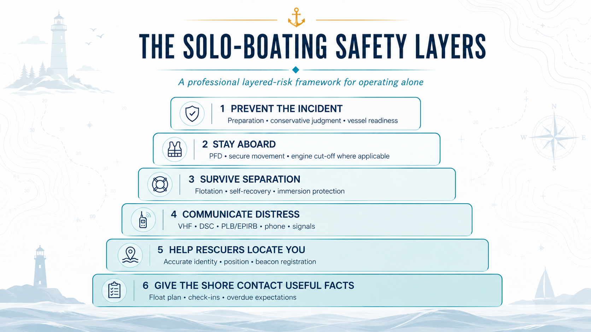
Core principle: Prepare for the incident you hope never happens, and make sure one equipment failure does not remove every remaining option.
Conservative judgment is active seamanship
Solo-boating preparation is not limited to buying equipment. It includes deciding before departure what conditions, fatigue, loss of communication, fuel concern, equipment trouble, or visibility change would cause you to shorten, modify, postpone, or cancel a trip.
A schedule is not a reason to continue into conditions that no longer fit the boat, route, or operator. Turning around, choosing a protected alternative, or going another day is an active safety decision.
Chapter 2 - Float Plans and Shore Contacts
A float plan is one of the most useful safety measures available to a solo boater. U.S. Coast Guard recreational-boating guidance recommends completing a float plan and leaving it with a responsible person when getting underway.
For a solo boater, that person ashore may be the only person who knows where the trip began, what craft is being used, where the operator intended to go, what route and stops were planned, when the trip should end, and when a missed check-in should become a concern.
What a useful float plan contains
The plan should be specific enough to help another person understand the trip without pretending that every schedule change is an emergency. Include the following information where it applies:
- operator name and contact information
- vessel or craft name, type, make, model, length, primary colors, and identifying features
- registration or documentation number where applicable
- a current photograph of the vessel or craft
- launch ramp, marina, dock, beach, parking area, or other exact departure point
- vehicle and trailer information when relevant
- departure date and time
- planned route, destinations, and important stops
- reasonable alternate destinations or safe stopping points
- expected return or arrival time
- planned check-ins and an agreed overdue threshold
- communication methods and relevant safety equipment
- emergency contacts and any relevant medical information voluntarily provided
The Coast Guard specifically recommends including a current vessel photo. Similar-looking boats can otherwise be difficult to distinguish. For paddlecraft, where formal identifying information may be limited, an accurate photo, craft color, launch point, route, vehicle, and planned return can be especially useful.
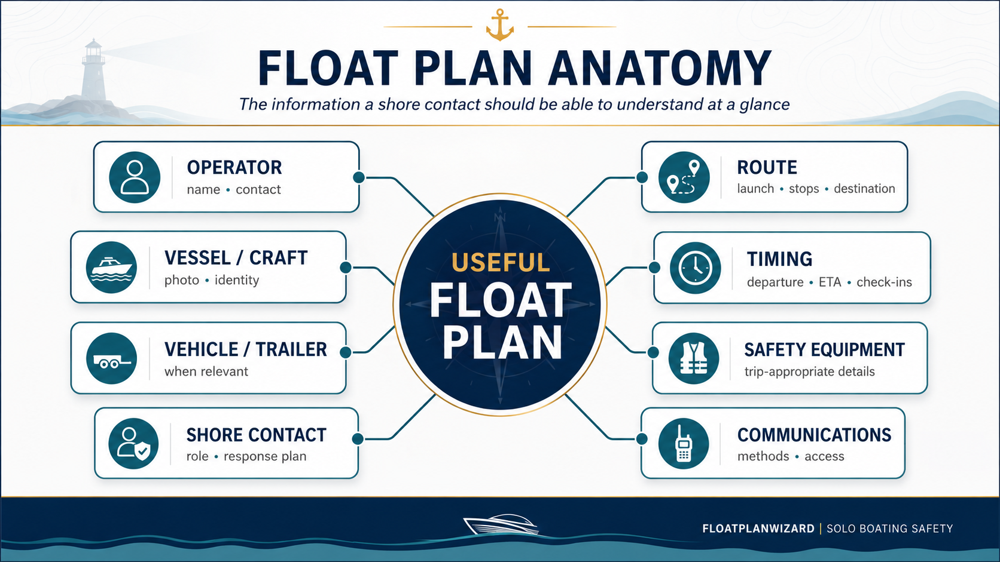
Identify the exact craft and access point
Descriptions such as "white boat" or "blue kayak" are far less useful than a current image and accurate details. Record what makes the craft identifiable: hull and trim colors, vessel name, top or enclosure color, sail markings, antennas, towers, visible equipment, or other distinctive features.
Match the record to the craft. A larger vessel may have a name, home port, registration or documentation, and marina berth. A kayak, canoe, or SUP may depend more on a clear photograph, exact access point, vehicle information, route, and return time.
Choose the right shore contact
Do not leave the float plan with someone who is unlikely to notice a missed check-in. Choose a person who understands that they are the shore contact, agrees to pay attention to the trip, knows when you expect to check in or return, understands the agreed response, can access the information, and is likely to answer if an authority needs additional facts.
A plan sitting unread in an inbox is not as useful as a plan held by someone who understands the role. Review the plan before departure, especially when the route or timing is unfamiliar.
Check-ins and overdue expectations are different
A planned check-in is a particular point when the boater expects to report. An overdue threshold is the agreed point when the shore contact should follow the response plan. They are related, but they are not the same thing.
Avoid vague instructions such as, "If I'm not back sometime tonight, maybe start worrying." Instead, agree on an expected return, any planned check-in, and what the contact should do if communication is missed.
There is no universal grace period. Appropriate timing depends on the trip, vessel, environment, weather, remoteness, communications, operator, known medical considerations, and other circumstances. An agreed overdue time also does not mean the shore contact should ignore evidence of immediate danger. A distress call, emergency message, severe-weather concern, known medical emergency, or other credible indication of immediate risk may justify action sooner.
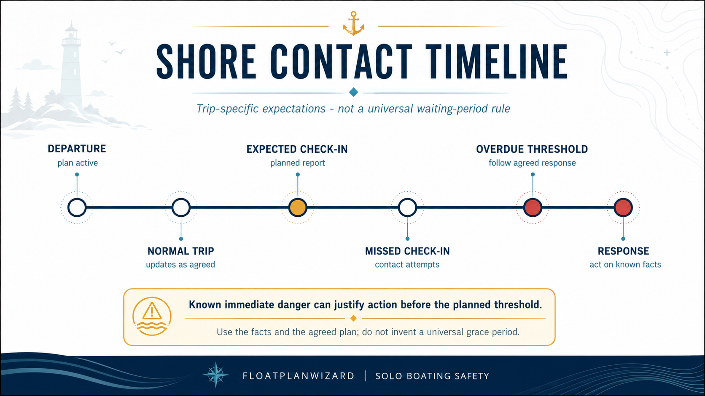
Update and close the plan
Plans change on the water. When practical, tell the shore contact if you substantially change route, choose a different destination, stop unexpectedly, delay your return, return early, or abandon the trip. The contact should know which information is still current.
A shore contact should never have to guess whether you forgot to close the plan or whether you are actually overdue.
Contact the person holding the plan when you return, arrive at the destination, intentionally end the trip somewhere different, or transfer responsibility for the plan to someone else.
For a fuller explanation of the shore-contact role, share What a Shore Contact Should Do When a Boater Is Overdue. Additional float-plan context is available at Why Use a Float Plan?
Chapter 3 - Staying Aboard and Getting Back Aboard
For a solo operator, falling overboard can create several problems at once: the person is in the water, the boat may continue or drift away, critical equipment may be out of reach, and nobody remains aboard to maneuver back or help with reboarding.
Wear an appropriate life jacket
Carrying a life jacket and wearing one are not the same thing. Federal and state PFD requirements vary by vessel, activity, age, location, and jurisdiction. This book does not state that every adult is legally required to wear a PFD at all times on every recreational vessel.
U.S. Coast Guard guidance recommends wearing an approved life jacket while underway because an emergency may not leave enough time to retrieve and put one on. For someone boating alone, FloatPlanWizard's best-practice recommendation is straightforward:
Wear an appropriate life jacket while underway when boating alone.
Choose one appropriate for the activity, water conditions, environment, clothing, and operating position. Paddlecraft and cold-water trips may require equipment selected specifically for immersion risk.
Plan for separation from the boat
A powered vessel may keep moving after the operator leaves the helm. Any craft can drift away under wind or current. The primary hazard is not merely entering the water; it is becoming separated from flotation, communications, signaling equipment, and the means of getting home.
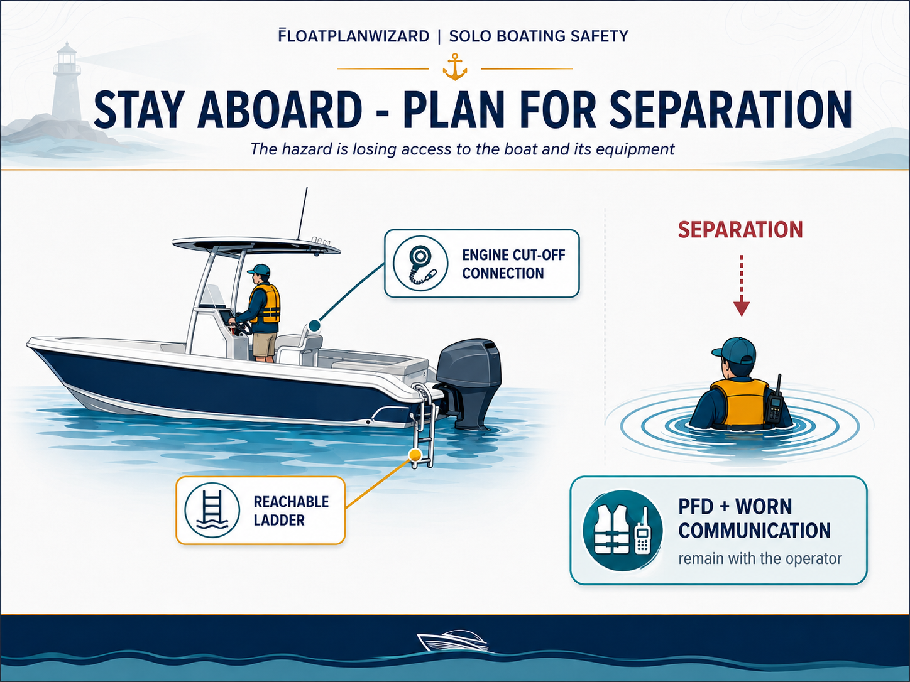
Ask the reboarding question before departure
If I enter the water, can I get back aboard without help?
Do not assume the answer is yes. Freeboard, hull shape, ladder placement, swim-platform design, clothing, water temperature, fatigue, waves, wind, current, physical condition, and operator strength all affect the practical answer.
A ladder is useful only if it can be reached and deployed from the water. A swim platform is useful only if the operator can actually climb onto it. A paddlecraft recovery technique is useful only if the operator understands and has practiced it.
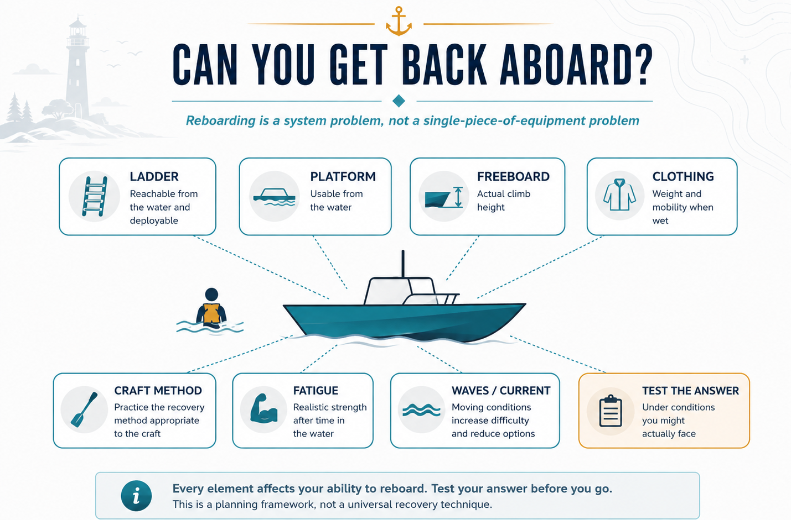
Practice the method appropriate to the craft
Where practical and safe, test self-recovery under controlled conditions. On a powerboat or cruiser, confirm whether the ladder can be reached and deployed from the water, whether you can climb aboard in typical boating clothing, and whether covers or other equipment interfere.
For a kayak, canoe, SUP, or similar craft, learn and practice the capsize, self-rescue, re-entry, or assisted-rescue techniques appropriate to that specific craft and the conditions in which it is used. Training should match the craft. The first discovery that reboarding is not possible should not occur during an emergency.
Use the engine cut-off system where it applies
Engine cut-off systems are designed to stop propulsion when the operator is displaced from the controls. Federal requirements apply to certain recreational vessels and operating situations; this is not a statement that every vessel in every circumstance is legally required to use one.
For boats equipped with a cut-off system, understand how it works, verify it functions before departure, use it where required, and consider it an important solo-operating precaution whenever its use is appropriate.
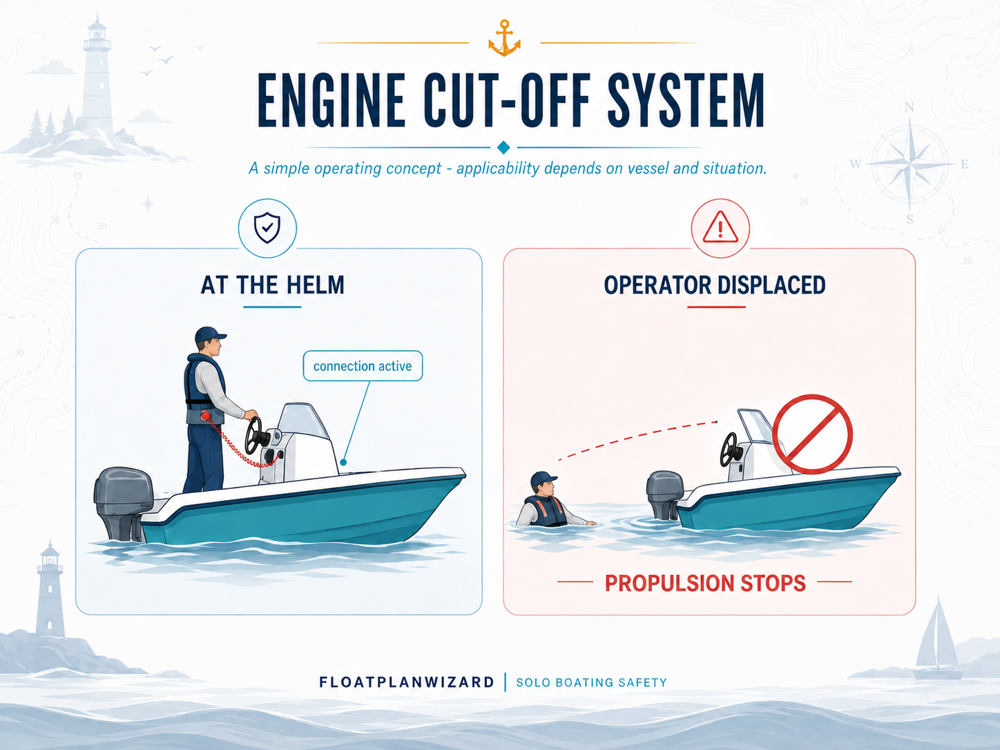
Keep critical equipment available after separation
Ask what safety equipment will still be with you if the boat moves away. A phone stored in a cabin, a handheld VHF in a console, or a beacon in an inaccessible locker may be excellent equipment that cannot be reached when needed.
Not every item must be worn in every circumstance. The operator should deliberately decide which communication and signaling equipment belongs on the body or PFD, in a waterproof pocket, or otherwise immediately accessible, and which larger systems remain aboard.
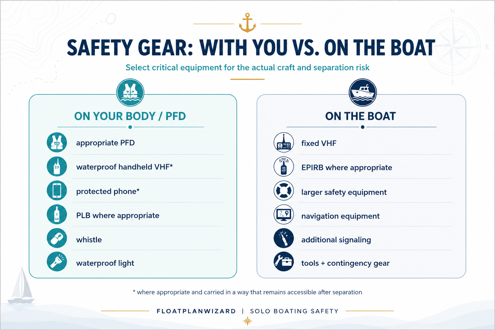
Chapter 4 - Communications When Nobody Else Is Aboard
Communication equipment improves options, but no one method guarantees coverage, reception, rescue, or a particular response time. Build useful redundancy, learn the equipment before departure, and tell the shore contact which methods you expect to use.
Do not rely on a single method
A cellphone can be extremely useful in coverage, but coverage can disappear quickly on the water. Battery failure, water intrusion, antenna limitations, terrain, distance from shore, or network problems can make a single system unavailable.
Depending on the vessel and trip, a communication plan may combine a waterproof phone, fixed marine VHF, waterproof handheld VHF, DSC-capable radio, PLB, EPIRB, whistle, other sound-signaling equipment, visual distress signals, and a waterproof light. The appropriate combination depends on the craft, route, environment, and applicable requirements.
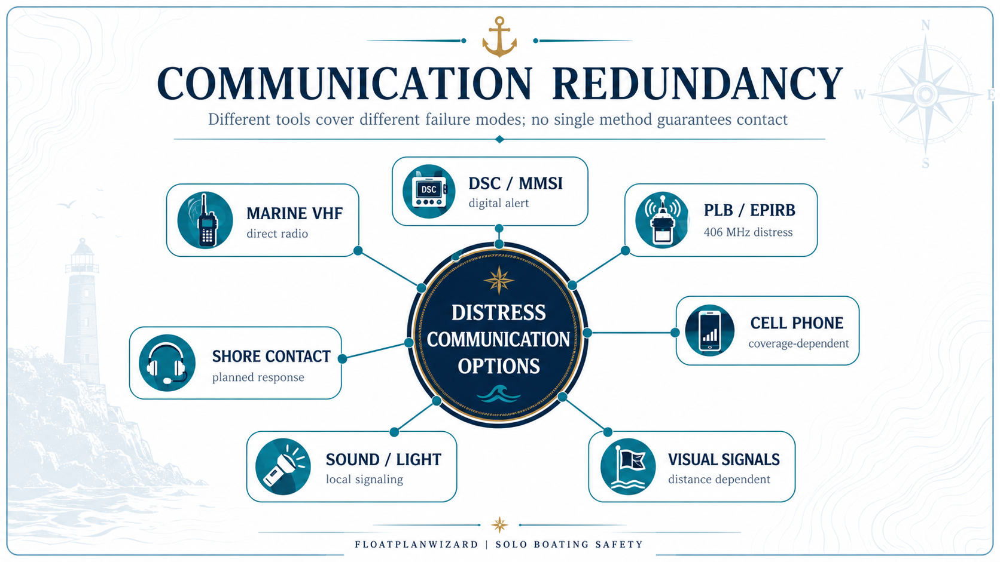
Cellphones
Carry a charged phone when appropriate and protect it from water. Consider whether it remains accessible after a capsize or overboard event. A cellphone is not a complete substitute for marine VHF in situations where VHF is the appropriate boating communication tool, and a tracking or messaging app cannot create coverage where none exists.
Marine VHF and Channel 16
For boats equipped with marine VHF, the operator should know how to use it before an emergency. Channel 16 is used internationally for distress, safety, and calling.
Know how to select Channel 16, make a distress call, state the vessel name and nature of distress, provide position information, describe the vessel, state the number of people aboard, and listen for instructions. Do not wait for an emergency to learn where the transmit button is or how the menus work.
A fixed VHF can provide vessel-based range and power. A charged waterproof handheld VHF can add backup and may remain useful if primary power fails or the operator becomes separated from the vessel, provided it is kept accessible.
Digital Selective Calling and MMSI
Digital Selective Calling can improve distress communication on a properly configured marine radio. Depending on the installation, a DSC-capable radio may send identifying and position information with a distress alert.
The system is only as useful as its configuration. Where applicable, obtain the appropriate Maritime Mobile Service Identity, program it correctly, connect compatible position information where required, verify the installation, and understand the distress function. Merely owning a DSC radio does not guarantee that complete identity and position information will be transmitted or received.
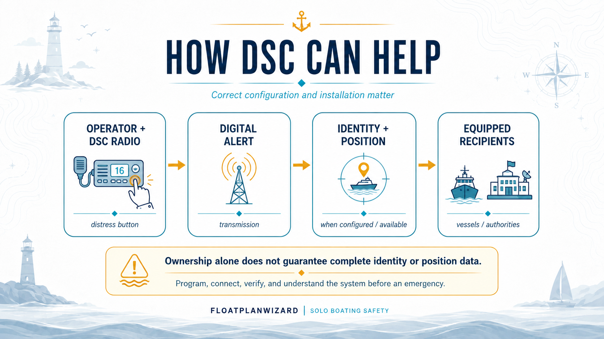
PLBs and EPIRBs
A Personal Locator Beacon is intended to be personally carried and manually activated. For a solo boater, personal accessibility can be particularly valuable if the operator becomes separated from the vessel.
An Emergency Position Indicating Radio Beacon is designed primarily as a maritime vessel distress beacon. Depending on the unit and installation, activation may be manual or automatic. Equipment choice and carriage should fit the vessel and voyage.
NOAA's U.S. beacon-registration system associates registered beacon information with emergency contacts and other information useful to search-and-rescue authorities. Registration is free and should be kept current.
A beacon adds an emergency communication layer. It does not remove the need for trip planning, appropriate equipment, weather judgment, or a shore contact.
Chapter 5 - Weather and the Solo Go or No-Go Decision
Weather should not be a box checked after deciding to go. It should be part of the decision about whether the trip happens at all.
Review the complete conditions
Before departure, review the appropriate forecast, advisories, and observations for the full route and time period. Consider wind, gusts, waves or seas, thunderstorms, visibility, fog, precipitation, air temperature, water temperature, tides, current, daylight, and marine warnings.
Conditions can differ between a protected launch, an exposed shoreline, open water, a river reach, and the return leg. Timing can change wind, current, tide, daylight, and exposure. Look beyond what is visible at the ramp.
Use current official NOAA and National Weather Service information and other authoritative local sources. FloatPlanWizard Marine Weather can help organize the review in the planning workflow, but no single display replaces operator judgment or current official warnings.
Use a wider solo margin
Conditions you may comfortably handle with competent crew aboard may not be conditions you choose to handle alone.
This is a FloatPlanWizard best-practice principle, not an agency regulation. This book does not establish universal numerical limits for wind, gusts, wave height, current, visibility, or water temperature. Different craft, routes, and operators have dramatically different limitations.
The practical question is whether the forecast and observed conditions are comfortably within the limits of this boat or craft, this operator, this route, this duration, and this solo trip.
Set limits before departure
Decide in advance which conditions or equipment problems would cause you to go, modify the route, choose a protected alternative, postpone, return early, or cancel. Factors may include increasing wind, thunderstorms arriving sooner than forecast, unexpected seas, reduced visibility, insufficient daylight, equipment trouble, fatigue, illness, loss of communication, navigation problems, or fuel concerns.
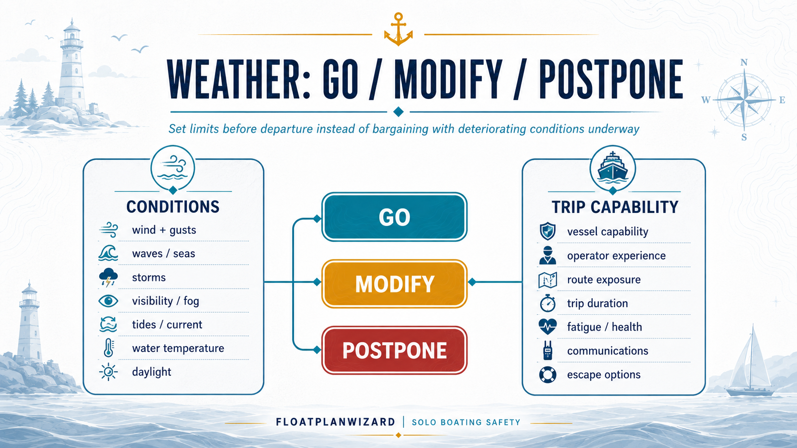
There is no shame in turning around. A float plan is not a contract requiring completion of the planned route. Safety takes priority over the route and ETA. When practical, update the shore contact after a meaningful change.
Chapter 6 - Cold Water, Fatigue, and Human Factors
Weather forecasts describe the environment, but the operator's physical and mental condition also determines whether the trip remains within a safe margin.
Cold water changes the recovery problem
Air temperature alone does not indicate whether immersion is safe. Cold-water immersion can rapidly affect breathing, coordination, dexterity, swimming ability, judgment, strength, and the ability to self-rescue or reboard.
This deserves particular attention for kayaks, canoes, SUPs, dinghies, small open boats, shoulder-season trips, and northern waters. Consider water temperature, likely exposure time, distance from safe landing, wind, waves, clothing, PFD, immersion protection, and actual rescue capability.
For paddling in cold water, activity-appropriate wetsuit or drysuit protection may be appropriate depending on the conditions. This book does not create a universal safe or unsafe water-temperature line. Consult current craft- and location-specific authoritative guidance.
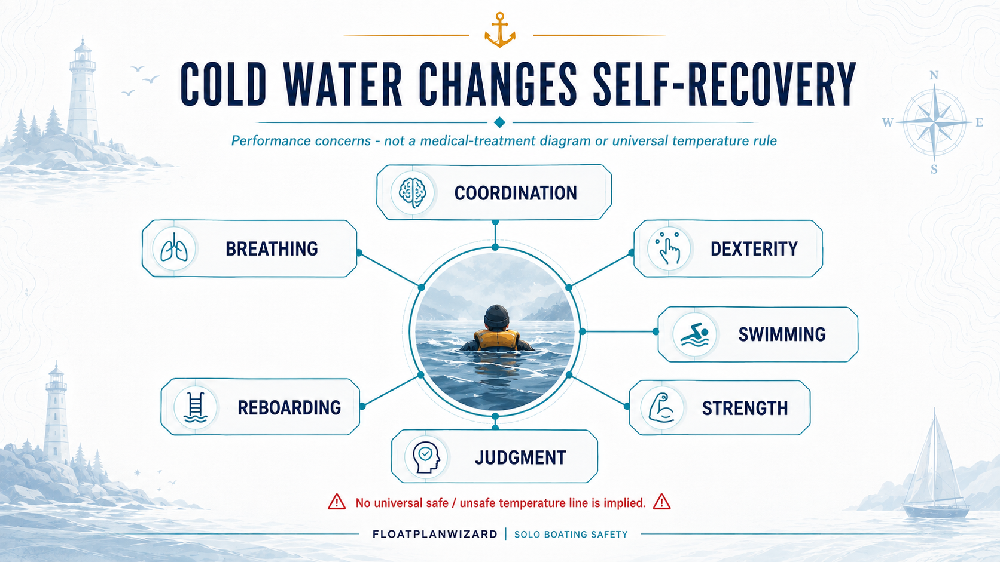
Fatigue accumulates
Operating a boat can be tiring even when the trip does not appear physically demanding. Sun, wind, spray, vibration, heat, cold, noise, motion, balance, and sustained concentration all contribute.
When boating alone, there is no second helmsperson to provide a break.
Start rested. Eat appropriately, stay hydrated, protect yourself from sun and weather, plan realistic breaks, avoid an unnecessarily aggressive schedule, and shorten the trip when concentration declines. Do not allow an ETA to pressure you into continuing unsafely.
Long-distance solo sailors and cruisers face additional fatigue-management challenges, but even a few hours on a small boat can produce meaningful fatigue.
Alcohol and solo operation
Alcohol affects judgment, balance, coordination, and reaction time. Those impairments matter on any boat and matter even more when nobody else is aboard to take over. FloatPlanWizard strongly recommends avoiding alcohol while operating a boat alone. This book is not a comprehensive boating-under-the-influence law reference.
Chapter 7 - Preparing the Boat or Craft
A solo operator has fewer options once a problem develops underway. An appropriate pre-departure check reduces avoidable surprises and confirms that essential equipment is working and accessible.
Readiness is proportional to the craft and trip. A paddler may focus on hull condition, drainage, paddle or spare paddle, flotation, clothing, and person-carried equipment. A powerboat, sailboat, or cruiser adds propulsion, fuel, batteries, steering, controls, dewatering, navigation, anchoring, and electrical systems.
Propulsion
Check the engine, motor, paddle, sails, rigging, and any appropriate spare propulsion. Confirm that craft-specific equipment is present and ready rather than discovering a missing paddle, damaged line, or control problem after departure.
Fuel and power
Confirm fuel quantity, an appropriate reserve, batteries, charging, and electrical systems. Fuel calculations are estimates. They do not replace the operator's responsibility to account for actual consumption, reserve, weather, current, detours, and operating conditions.
Steering and controls
Check steering, throttle, shift controls, rudder, tiller, control cables, and the engine cut-off system where applicable. A control that is merely present is not necessarily functional.
Water management
Check bilge pumps, drain plugs, cockpit drains, scuppers, and manual dewatering equipment where appropriate. Match the check to the craft; a kayak drainage arrangement and a cruiser bilge system address different problems.
Navigation
Verify the chartplotter, charts, compass, appropriate backup navigation, and navigation lights if they may be required. A powered display can fail, so the backup should fit the route and operator capability.
Safety equipment and communications
Check required and trip-appropriate PFDs, fire extinguishing equipment where applicable, sound signaling, visual distress signals where required or carried, first aid, anchor and ground tackle, communication equipment, and reboarding equipment.
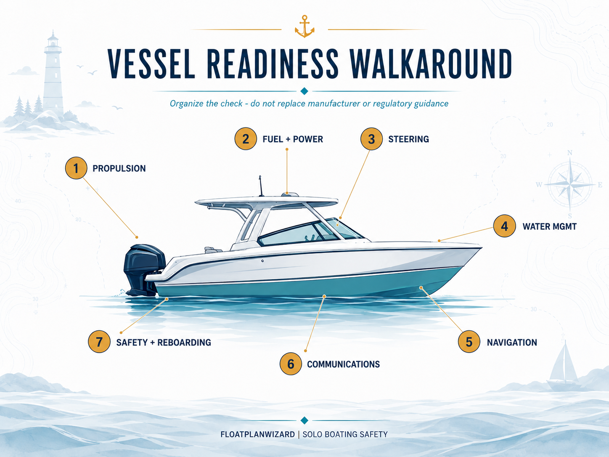
Legal requirements and Vessel Safety Checks
Legal equipment requirements vary by vessel, length, propulsion, activity, operating waters, location, and jurisdiction. This chapter is not an exhaustive regulatory chart. Confirm current requirements with the appropriate authority.
For eligible recreational boats, the U.S. Coast Guard Auxiliary and America's Boating Club programs provide free Vessel Safety Checks. A check can help identify missing required equipment, condition issues, possible safety concerns, and areas where the operator may want additional preparation. It does not replace the operator's ongoing responsibility or a manufacturer inspection.
Chapter 8 - Solo Paddlecraft
Kayaks, canoes, SUPs, and similar craft are not simply small versions of cabin cruisers. Their low freeboard, exposure, capsize possibilities, limited storage, and sensitivity to wind and current create a different recovery problem.
Wear the PFD and dress for immersion
Wear an appropriate PFD rather than merely carrying one. Cold water can be dangerous on a warm day, so choose clothing and immersion protection for the water and actual conditions, not only the air temperature at launch.
Practice the recovery appropriate to the craft
Know what happens if the craft overturns or the paddler becomes separated. Learn and practice the capsize recovery, self-rescue, re-entry, or board-remount technique appropriate to the specific craft and conditions. No single technique is correct for every kayak, canoe, SUP, paddler, and environment.
Protect communication and signaling equipment
A phone that becomes unusable after capsize is not a reliable emergency system. Waterproof protection and person-carried access may be appropriate for a phone, handheld VHF, PLB, whistle, waterproof light, or other signaling equipment depending on the location and trip.
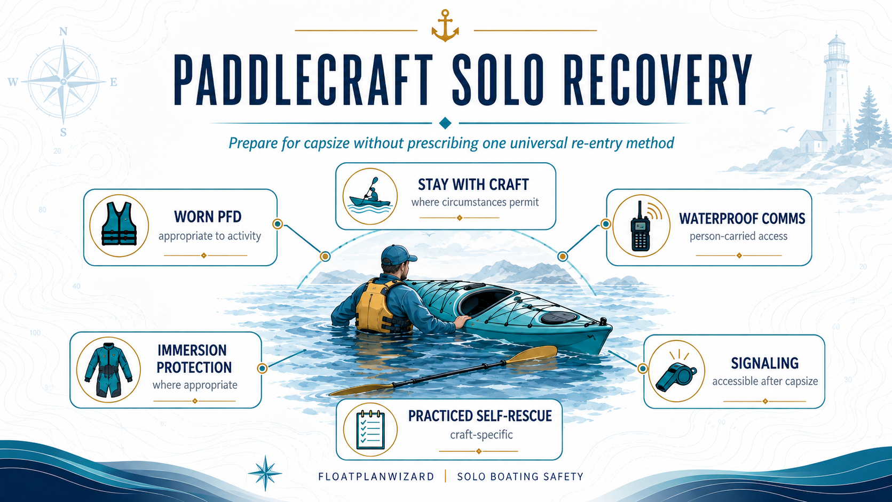
Record the launch and escape options
Give the shore contact the exact launch name, access point, parking area, planned route, destination, expected return, and vehicle information when relevant. Along the route, identify places where you could safely land, get out of the wind, shorten the trip, or seek assistance.
Respect wind and current
Moderate-looking conditions can become a major difficulty when a paddler must work against current, tidal flow, an offshore wind, or building waves. The return may be harder than the outbound leg. There is no universal numerical threshold that makes conditions safe for every paddler, craft, location, and route.
Chapter 9 - Solo Powerboats
Small fishing boats, center consoles, skiffs, runabouts, and similar craft combine speed and propulsion with the solo operator's need to manage controls, navigation, equipment, and recovery without help.
Keep the boat from becoming a second hazard
Use the engine cut-off system where required and whenever appropriately equipped for the operating situation. Verify it before departure. A person in the water can face injury and separation if an unmanned boat continues under power.
Stay aboard and organize the operating area
Avoid unnecessary movement while underway. Arrange frequently used equipment so you do not repeatedly leave a secure operating position. Keep the cockpit and deck clear enough to move deliberately without creating avoidable trip or entanglement hazards.
Make reboarding realistic
A high-sided boat with no water-deployable ladder can be unexpectedly difficult to enter. Test whether the ladder or platform can be reached and used from the water while wearing normal boating clothing. Do not assume an interior release can be reached after an overboard event.
Retain communication after separation
Keep at least one useful emergency communication or signaling method accessible if separated from the boat. A fixed VHF and EPIRB may be important vessel systems; a waterproof handheld radio, phone, whistle, light, or PLB may provide a different layer when carried appropriately.
Fuel and anchor readiness
Plan fuel conservatively and maintain an appropriate reserve. FloatPlanWizard's Boat Fuel Calculator can help with estimates, but calculations do not replace responsibility for actual consumption and conditions.
Where anchoring is appropriate, an accessible anchor may provide another way to keep the vessel from drifting into increasing danger after propulsion trouble. Anchor selection and use remain craft-, depth-, bottom-, and location-specific.
Chapter 10 - Solo Sailboats and Cruisers
Solo sailing adds sail handling, deck movement, and workload to ordinary boating risks. Larger cruisers provide shelter and equipment, but size can create high freeboard, greater system complexity, and more difficult close-quarters work.
Solo sailboats
Reduce sail before conditions become difficult. Reefing early is generally easier than waiting until the boat is already overpowered, but there is no universal reefing wind speed suitable for every vessel, rig, operator, and sea state.
Arrange systems so common tasks require the least unnecessary movement away from a secure operating position. Depending on the vessel, conditions, deck layout, and offshore exposure, precautions may include a suitable PFD, harness, tether, jacklines, and secure attachment points.
World Sailing Offshore Special Regulations can provide offshore and racing safety context. They are not universal U.S. recreational law, and this book does not expand into a solo offshore passagemaking manual.
Autopilot is equipment, not crew
An autopilot can reduce workload. It cannot maintain a proper lookout, detect every hazard, respond to a medical emergency, or recover the operator from the water. Its presence does not make solo sailing equivalent to having another capable person aboard.
Larger cruisers
A solo cruiser may need to manage navigation, helm, engine monitoring, radios, lines, fenders, anchoring, docking, electrical systems, weather, and fatigue without assistance.
Before approaching a marina, lock, dock, or anchorage, prepare lines and fenders, organize equipment, identify the intended maneuver, and reduce last-second deck movement. Test reboarding systems on high-freeboard vessels rather than assuming a platform or ladder is usable from the water.
Depending on the voyage, preparation may also include anchor readiness, towing information, basic spare parts, tools, backup navigation, and emergency-steering considerations. Keep the preparation proportional to recreational coastal, inland, Great Lakes, Intracoastal Waterway, river, and similar cruising.
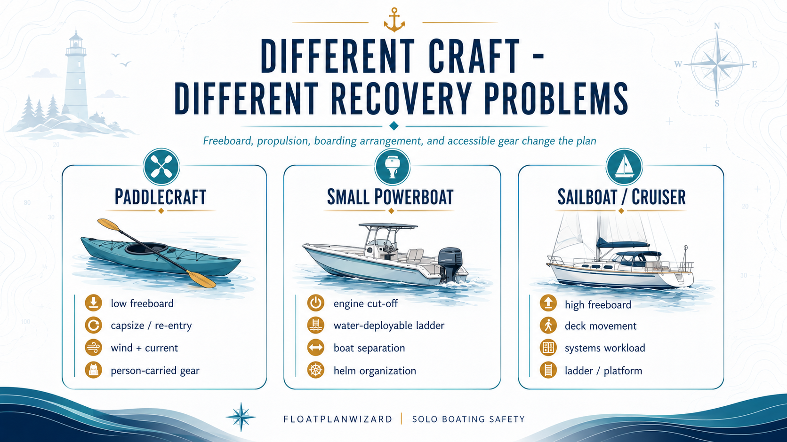
Chapter 11 - Changing Plans, Tracking, and Technology Limitations
Plans change on the water. Weather shifts, a marina fills, a lock closes, an anchorage becomes uncomfortable, fatigue grows, or a mechanical concern forces a different destination. Changing the plan can be the safest decision available.
The plan should support judgment
A float plan records intent; it does not obligate the captain to continue an unsafe route or meet an ETA at the expense of safety. When practical, notify the shore contact after a substantial route change, different destination, unexpected stop, delay, early return, or abandoned trip.
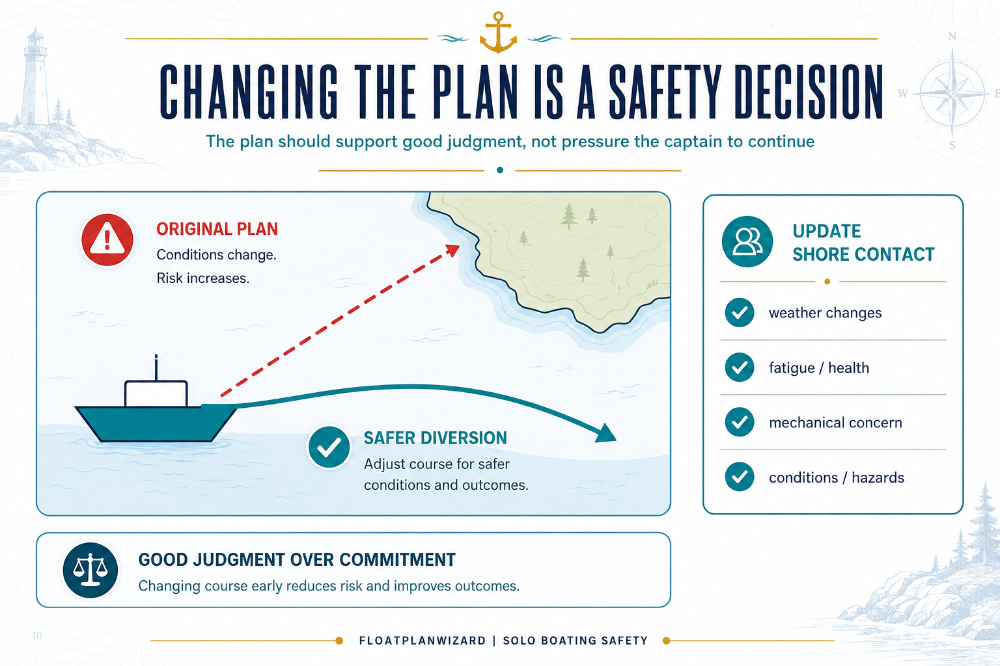
Tracking has failure modes
Technology may provide messages, check-ins, GPS-bearing reports, estimated progress, follow-page updates, or beacon information during an emergency. None of those should be treated as continuous and infallible tracking.
Coverage can fail. Batteries can die. Hardware can fail or be damaged by water. A device can become separated from the operator or vessel. A projected route position is not the same as a confirmed current position. A shore contact can also draw the wrong conclusion from an old report.
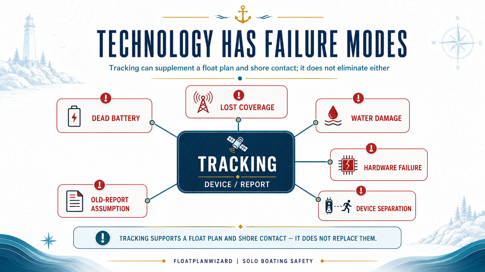
Tracking limitations: Reported positions are reports. Estimated progress is an estimate. FloatPlanWizard does not guarantee continuous tracking, verify distress, or dispatch emergency assistance.
Chapter 12 - What Your Shore Contact Needs to Know
A useful shore-contact response begins before the boat leaves. The contact should review the float plan, know where to find it, understand the route and timing, know the preferred contact methods, and agree on what the captain wants done after a missed check-in.
When a check-in or return is missed
The contact should check the agreed trip details, attempt the agreed communication methods, ask whether another trusted person or marina has heard from the boater, review the latest available update without treating it as guaranteed live position, record contact attempts, and reassess weather, darkness, medical concerns, and other risk factors.
Routine delay, overdue concern, and immediate danger
A routine delay has no distress indication or unusual known risk; the contact can follow the agreed plan while reassessing. An overdue concern may arise after the trip-specific threshold passes, contact attempts fail, or conditions increase concern. Immediate danger involves a distress indication, severe weather, medical issue, vulnerable person, or another known or reasonably suspected danger.
If someone may be in immediate danger, do not wait for the planned overdue time. Contact the appropriate emergency authority and provide the known facts.
Provide facts and avoid speculation
Useful information may include the captain and passenger names, vessel description and photograph, registration or documentation, launch point, vehicle and trailer information, departure and expected return, route and stops, last contact or report, communication and safety equipment, known medical concerns, emergency contacts, and any route-change message.
After reporting concern, remain reachable, preserve the plan and messages, follow the authority's instructions, and provide new factual information. Do not launch an unsafe independent search. If the captain or someone aboard makes contact, promptly update the authority handling the concern.
The complete, carefully qualified companion resource is What a Shore Contact Should Do When a Boater Is Overdue.
Chapter 13 - The Complete Solo Boater Pre-Departure Checklist
The checklist is the practical culmination of the guide. It preserves all 84 items from the production FloatPlanWizard Solo Boating Safety Guide. Apply each item to the craft, activity, operating waters, and trip; "where applicable" is an important qualification, not an invitation to ignore preparation.
Use each checkbox to mark an item complete. The PDF and DOCX include interactive checkboxes that remain visible when printed; the EPUB presents accessible checkbox controls with a print-safe visual box.
Trip plan
Why it matters: When you boat alone, somebody ashore may be the only person who knows your intended route and return time. A clear plan gives that person useful facts if you become overdue.
Think about: A planned check-in and an overdue threshold are related but different. Record the intended trip, identify reasonable alternatives, update meaningful changes when practical, and close the plan when the trip is complete.
- I have identified my exact launch or departure point.
- My planned route is recorded.
- My intended destination is recorded.
- Important planned stops are recorded.
- My expected return or arrival time is recorded.
- I have identified reasonable alternate destinations or safe stopping points.
- My shore contact knows how I will report a change of plans.
- We have agreed on check-in expectations.
- We have agreed on when I should be considered overdue.
- My shore contact knows what to do if I am overdue.
- My shore contact has access to the FloatPlanWizard Shore Contact Guide.
- I will tell my shore contact when the trip is safely complete.
Vessel or craft information
Why it matters: An accurate photo, identifying details, and the exact access point help a shore contact describe the right craft and where the trip began.
Think about: Record the information before departure while details can be checked. A current photo and exact access point may matter more for a paddlecraft; a larger vessel may also have formal identification, a name, and a home port.
- A current photo of the boat or craft is available.
- Registration or documentation information is current where applicable.
- Make, model, type, length, and primary colors are recorded.
- Important identifying features are recorded.
- Launch ramp, marina, dock, beach, or access point is recorded.
- Vehicle information is included when relevant.
- Trailer information is included when relevant.
Personal safety
Why it matters: With no second person to provide flotation, take the helm, retrieve equipment, or help with reboarding, personal preparation and self-recovery planning matter more.
Think about: Wear and carry equipment appropriate to the activity, manage hydration and exposure, and answer the reboarding question honestly before the trip. Practice the relevant method where it is practical and safe.
- I am wearing an appropriate PFD for the activity and conditions.
- My clothing is appropriate for both air and water conditions.
- I am rested enough for the planned trip.
- I have adequate drinking water.
- I have appropriate food or snacks for the trip length.
- Necessary medications are accessible.
- First-aid supplies are appropriate for the trip.
- I know how I would get back aboard after entering the water.
- I have practiced the relevant self-rescue or reboarding method where practical.
- Essential emergency equipment will remain accessible if I become separated from the boat.
Weather and environment
Why it matters: A solo operator has no one aboard to take over as conditions or fatigue worsen. Review the full route and use a wider, conservative margin before departure.
Think about: Review official information for the whole route and time period. Set turn-back, route-change, or cancellation limits before schedule pressure or worsening conditions influence the decision.
- I checked the current marine or local forecast.
- I checked applicable advisories and warnings.
- I checked expected wind.
- I checked expected gusts.
- I checked waves or seas where applicable.
- I checked thunderstorm risk.
- I checked visibility and fog risk.
- I checked tide where applicable.
- I checked current where applicable.
- I considered water temperature.
- I considered air temperature and exposure.
- I have enough daylight for the planned trip or am properly prepared for darkness.
- Conditions along the entire planned route remain within my conservative solo limits.
- I have decided in advance what conditions would cause me to turn back or cancel.
Communications
Why it matters: A device is of limited use if it fails or becomes unreachable after separation from the boat. Plan appropriate communication redundancy and keep critical equipment accessible.
Think about: A fixed VHF, handheld VHF, cellphone, DSC radio, PLB, and EPIRB are different tools. Learn the equipment, keep registration and configuration current, and do not rely on a single communication method.
- My primary communication method works.
- A backup communication method is available where appropriate.
- My cellphone is charged if carried.
- My cellphone is protected from water where appropriate.
- My VHF works where carried.
- I know how to use VHF Channel 16 where applicable.
- DSC/MMSI information is correctly configured where applicable.
- My handheld VHF is charged where carried.
- My PLB is registered and current where carried.
- My EPIRB is registered and current where carried.
- Critical personal distress equipment is accessible if I become separated from the vessel.
- My shore contact knows which communication methods I expect to use.
Boat or craft readiness
Why it matters: Equipment failures are harder to manage without another capable person aboard. A pre-departure check reduces avoidable surprises and confirms essential systems and equipment are ready.
Think about: Match the inspection to the craft. Confirm propulsion, controls, power, water management, navigation, communications, reboarding equipment, and legally required or trip-appropriate safety equipment.
- Fuel quantity is adequate for the trip.
- An appropriate fuel reserve is planned.
- Batteries and charging systems are checked where applicable.
- Engine or propulsion system is checked.
- Steering is checked.
- Engine controls are checked.
- Engine cut-off system is checked where applicable.
- Bilge or dewatering equipment is checked where applicable.
- Drain plugs and drains are correct where applicable.
- Navigation lights are working if they may be needed.
- Sound-signaling equipment is available.
- Visual distress signals are checked where required or carried.
- Fire extinguishing equipment is checked where applicable.
- Anchor and ground tackle are ready where appropriate.
- Navigation equipment is working.
- An appropriate backup navigation method is available.
- Required safety equipment is aboard and accessible.
- Paddle, spare paddle, sails, rigging, or other craft-specific propulsion equipment is checked as applicable.
- Essential tools and spares are aboard where appropriate.
Solo-specific precautions
Why it matters: The missing second person means you must deliberately add redundancy, set abort limits, prepare for reboarding, and keep critical equipment within reach.
Think about: Ask whether the boat will stop, whether you can get back aboard, what remains reachable, how close maneuvering will be prepared, and what would cause you to abort or change the trip.
- I will use the engine cut-off system where required/applicable.
- Reboarding equipment can be reached or deployed from the water.
- I have considered what happens if I fall overboard while the boat is moving.
- Essential communications are not all stored somewhere I could lose access to after going overboard.
- The cockpit, deck, or paddling area is arranged to minimize unnecessary movement.
- Lines and fenders are prepared before close maneuvering where applicable.
- I have a clear turn-back or abort plan.
- I will not let my planned schedule pressure me into unsafe conditions.
- I will tell my shore contact about significant route or timing changes.
- I will close the float plan when the trip is safely complete.
Chapter 14 - The Solo Boater's Five-Minute Departure Routine
This short sequence does not replace the full preparation described in the book. It is a final pause after the planning and detailed checks are complete.
- Conditions: Confirm the current forecast, warnings, route conditions, water temperature, visibility, and daylight remain comfortably within your limits.
- Boat or craft: Confirm propulsion, controls, fuel or power, drainage, navigation, and craft-specific equipment are ready.
- PFD and personal safety: Put on the appropriate PFD and confirm clothing, water, food, medications, and first aid fit the trip.
- Communications: Test the primary method, confirm the backup where appropriate, and keep critical equipment accessible after separation.
- Self-recovery: Ask again whether you can get back aboard, reach the ladder or recovery system, and stop a powered vessel after leaving the helm.
- Float plan: Send or leave the current route, vessel, timing, contact, and alternate information.
- Shore-contact confirmation: Make sure the person understands the plan, check-in, overdue expectations, and how you will close or update the trip.
- Final decision: Depart only if the conditions, craft, equipment, and operator remain within a comfortable solo margin.
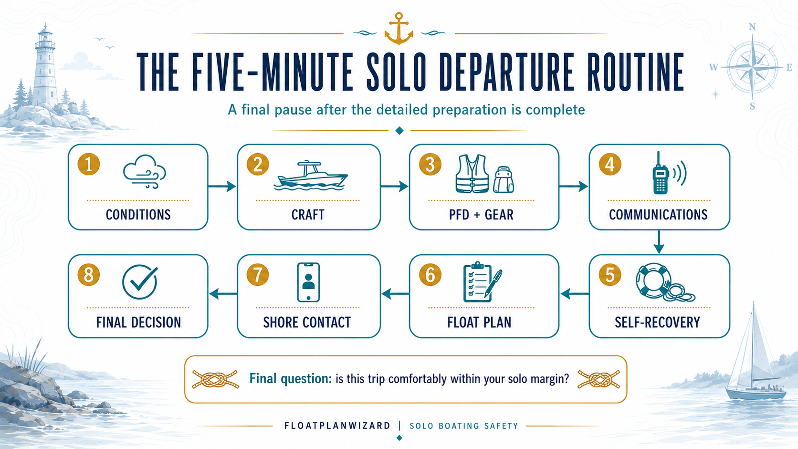
Final question: Are the conditions, craft, equipment, plan, and operator all ready for this trip to be handled alone?
Resources and References
These are the authoritative resources cited by the production FloatPlanWizard Solo Boating Safety Guide. URLs were retained without tracking parameters.
- U.S. Coast Guard Boating Safety Division. Float Plan
- U.S. Coast Guard Boating Safety Division. Life Jacket Wear / Wearing Your Life Jacket
- U.S. Coast Guard Boating Safety Division. Engine/Propulsion Cut-Off Devices FAQ
- U.S. Coast Guard Navigation Center. Radio Information for Boaters
- NOAA. U.S. Beacon Registration
- NOAA / National Weather Service. Marine Weather Services
- U.S. National Park Service. Kayaking and Kayak Safety
- U.S. Coast Guard Boating Safety Division. Federal and State Boating Regulations
- U.S. Coast Guard Auxiliary. Vessel Safety Checks
- World Sailing. Offshore Special Regulations
Always verify current requirements and local conditions with the appropriate authority before departure.
About FloatPlanWizard
FloatPlanWizard is a practical planning and communication tool created by a solo boater. It helps recreational boaters organize vessel and operator information, plan routes and timing, create float plans, share useful trip information, and keep a shore contact informed.
FloatPlanWizard supports preparation; it does not replace seamanship, appropriate safety equipment, marine communications, weather judgment, or emergency authorities. Any available trip update should be understood according to its stated limitations.
Plan your next trip at FloatPlanWizard.com.
Read the current online guide at FloatPlanWizard.com/solo-boating-safety-guide/.